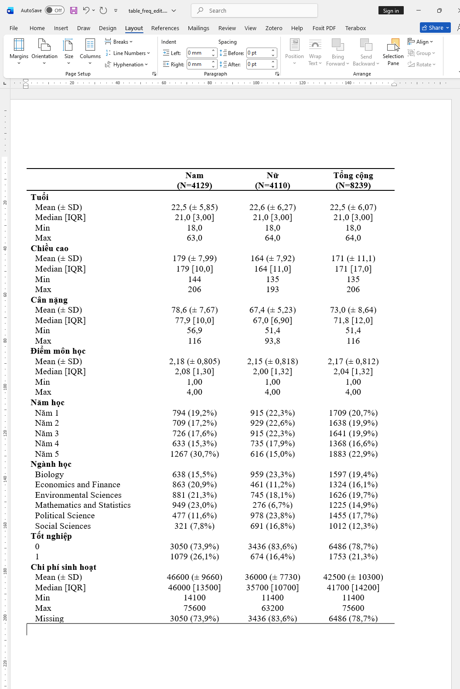

Đây là package chuyên để thực hiện thống kê mô tả rất hữu ích để tổng quát nhanh chóng một bộ dữ liệu, giúp tìm ra đặc điểm dữ liệu bị sai sót để người dùng có thể chỉnh sửa kịp thời. [record]
Cú pháp cơ bản
library (table1)library (flextable)library (magrittr)library (openxlsx)library (dplyr)$ vs <- factor (mtcars$ vs)$ cyl <- factor (mtcars$ cyl)$ am <- factor (mtcars$ am)1 : 3 , 1 : 3 ] <- NA <- table1::: table1.formula ( ~ . | vs,topclass= "Rtable1-grid" ,data = mtcars,# digits = 4, render.continuous = c ("Mean (± SD)" = "MEAN (± SD)" ,"Median [Min, Max]" = "MEDIAN [MIN, MAX]" )
mpg
Mean (± SD)
16.1 (± 3.74)
24.7 (± 5.57)
19.9 (± 6.31)
Median [Min, Max]
15.4 [10.4, 26.0]
22.8 [17.8, 33.9]
18.7 [10.4, 33.9]
Missing
2 (11.1%)
1 (7.1%)
3 (9.4%)
cyl
4
1 (5.6%)
9 (64.3%)
10 (31.3%)
6
1 (5.6%)
4 (28.6%)
5 (15.6%)
8
14 (77.8%)
0 (0%)
14 (43.8%)
Missing
2 (11.1%)
1 (7.1%)
3 (9.4%)
disp
Mean (± SD)
326 (± 98.3)
134 (± 58.8)
240 (± 127)
Median [Min, Max]
334 [120, 472]
121 [71.1, 258]
258 [71.1, 472]
Missing
2 (11.1%)
1 (7.1%)
3 (9.4%)
hp
Mean (± SD)
190 (± 60.3)
91.4 (± 24.4)
147 (± 68.6)
Median [Min, Max]
180 [91.0, 335]
96.0 [52.0, 123]
123 [52.0, 335]
drat
Mean (± SD)
3.39 (± 0.474)
3.86 (± 0.506)
3.60 (± 0.535)
Median [Min, Max]
3.18 [2.76, 4.43]
3.92 [2.76, 4.93]
3.70 [2.76, 4.93]
wt
Mean (± SD)
3.69 (± 0.904)
2.61 (± 0.715)
3.22 (± 0.978)
Median [Min, Max]
3.57 [2.14, 5.42]
2.62 [1.51, 3.46]
3.33 [1.51, 5.42]
qsec
Mean (± SD)
16.7 (± 1.09)
19.3 (± 1.35)
17.8 (± 1.79)
Median [Min, Max]
17.0 [14.5, 18.0]
19.2 [16.9, 22.9]
17.7 [14.5, 22.9]
am
0
12 (66.7%)
7 (50.0%)
19 (59.4%)
1
6 (33.3%)
7 (50.0%)
13 (40.6%)
gear
Mean (± SD)
3.56 (± 0.856)
3.86 (± 0.535)
3.69 (± 0.738)
Median [Min, Max]
3.00 [3.00, 5.00]
4.00 [3.00, 5.00]
4.00 [3.00, 5.00]
carb
Mean (± SD)
3.61 (± 1.54)
1.79 (± 1.05)
2.81 (± 1.62)
Median [Min, Max]
4.00 [2.00, 8.00]
1.50 [1.00, 4.00]
2.00 [1.00, 8.00]
Thay dấu . decimal point thành dấu , Dataset minh họa sinhvien.xlsx
options ("OutDec" = "," ) # thay đổi dấu decimal ở đây library (readxl)<- read_excel ("dataset/sinhvien.xlsx" )$ ` Tốt nghiệp ` <- factor (sinhvien$ ` Tốt nghiệp ` ,levels = c (0 , 1 ))# summary(sinhvien) <- table1::: table1.formula ( ~ . | ` Giới tính ` ,topclass= "Rtable1-grid" ,data = sinhvien[ , - 1 ],# digits = 4, overall = "Tổng cộng" ,render.continuous = c ("Mean (± SD)" = "MEAN (± SD)" ,"Median [IQR]" = "MEDIAN [IQR]" ,"Min" = "MIN" ,"Max" = "MAX" )
Tuổi
Mean (± SD)
22,5 (± 5,85)
22,6 (± 6,27)
22,5 (± 6,07)
Median [IQR]
21,0 [3,00]
21,0 [3,00]
21,0 [3,00]
Min
18,0
18,0
18,0
Max
63,0
64,0
64,0
Chiều cao
Mean (± SD)
179 (± 7,99)
164 (± 7,92)
171 (± 11,1)
Median [IQR]
179 [10,0]
164 [11,0]
171 [17,0]
Min
144
135
135
Max
206
193
206
Cân nặng
Mean (± SD)
78,6 (± 7,67)
67,4 (± 5,23)
73,0 (± 8,64)
Median [IQR]
77,9 [10,0]
67,0 [6,90]
71,8 [12,0]
Min
56,9
51,4
51,4
Max
116
93,8
116
Điểm môn học
Mean (± SD)
2,18 (± 0,805)
2,15 (± 0,818)
2,17 (± 0,812)
Median [IQR]
2,08 [1,30]
2,00 [1,32]
2,04 [1,32]
Min
1,00
1,00
1,00
Max
4,00
4,00
4,00
Năm học
Năm 1
794 (19,2%)
915 (22,3%)
1709 (20,7%)
Năm 2
709 (17,2%)
929 (22,6%)
1638 (19,9%)
Năm 3
726 (17,6%)
915 (22,3%)
1641 (19,9%)
Năm 4
633 (15,3%)
735 (17,9%)
1368 (16,6%)
Năm 5
1267 (30,7%)
616 (15,0%)
1883 (22,9%)
Ngành học
Biology
638 (15,5%)
959 (23,3%)
1597 (19,4%)
Economics and Finance
863 (20,9%)
461 (11,2%)
1324 (16,1%)
Environmental Sciences
881 (21,3%)
745 (18,1%)
1626 (19,7%)
Mathematics and Statistics
949 (23,0%)
276 (6,7%)
1225 (14,9%)
Political Science
477 (11,6%)
978 (23,8%)
1455 (17,7%)
Social Sciences
321 (7,8%)
691 (16,8%)
1012 (12,3%)
Tốt nghiệp
0
3050 (73,9%)
3436 (83,6%)
6486 (78,7%)
1
1079 (26,1%)
674 (16,4%)
1753 (21,3%)
Chi phí sinh hoạt
Mean (± SD)
46600 (± 9660)
36000 (± 7730)
42500 (± 10300)
Median [IQR]
46000 [13500]
35700 [10700]
41700 [14200]
Min
14100
11400
11400
Max
75600
63200
75600
Missing
3050 (73,9%)
3436 (83,6%)
6486 (78,7%)
Xuất kết quả ra file Word và Excel
# export ra word ::: t1flex (table_freq) %>% ::: save_as_docx (path = "dataset/table_freq.docx" )# export ra excel ::: write.xlsx (table_freq, file = "table_freq.xlsx" )
Mặc định thì format xuất ra Word sẽ chưa đẹp lắm, ta có thể vào mục Table Layout/Chọn AutoFit Window, sau đó chọn font chữ và size chữ phù hợp. Để các dòng khít lại với nhau, ta vào mục Layout, chọn Spacing (Before và After = 0 pt).

Credit: Cảm ơn Dr. Lê Kiều Chinh đã đề xuất câu hỏi để mình tìm cách format thay dấu chấm bằng dấu phẩy ở số thập phân từ kết quả xuất ra của package table1.